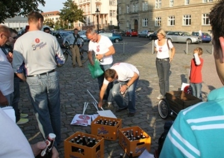
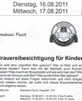

Zwar stand die Broschüre über die Jahre 1979 bis 1990 der Jugendinitiative Miltenberg bereits seit langer Zeit hier zur Verfügung, jetzt wurde das Ganze aber von einer HTML- zu einer PDF-Datei umgewandelt und damit hoffentlich etwas handlicher: (mehr…)
Archiv der Kategorie 'Jugend'
In „Mittenberg“ liegt also der neue Jugendtreff Miltenbergs. Da war wohl der Wunsch so mancher städtischer Bediensteter der Vater des Gedankens bzw. des Tippfehlers: (mehr…)
Hier gibt es noch (mehr…)
Er wurde nicht wirklich besetzt, der Miltenberger Jugendtreff. Aber bei den Renovierungsarbeiten an den Räumen verzierten die jungen Renovierer die Fenster mit einschlägigen Symbolen (siehe Foto), die inzwischen aber längst wieder beseitigt sind. Warum das erwähnenswert ist? Weil es belegt, dass etwas voran geht in Sachen Jugendtreff Miltenberg. In diesem Zusammenhang: Ein Blick auf die verschiedenen Beiträge zur ehemaligen JUI und den Jugendzentrumskämpfen danach lohnt immer. Und dann gibt es ja auch noch das „JuZ-Video“ mit dem Titel „Das etwas andere Miltenberg“, siehe ganz unten.

Foto: Hans Stachel
Frohe Kunde gibt es aus Miltenberg. Dort hat gestern eine kleine Gruppe der Jugendinitiative für ein unabhängiges Zentrum (JuZ) zusammen mit dem von der Caritas angestellten Sozialarbeiter Simon Schuster die Räume besichtigt, die für den neuen Jugendtreff hergerichtet werden. Zur Geschichte der Jugendzentrumsbewegung in Miltenberg und speziell zu den Ereignissen seit der Schließung des bisherigen Jugendtreffs in der Alten Volksschule gibt es in unserer Beiträge-Rubrik „Jugend & Bildung“ einige gute Beiträge, auf die wir aus aktuellem Anlass nochmals verweisen.
KBF Revolte ist ein Zweimannprojekt aus dem Raum Miltenberg, das nicht nur ausgefallene Songtitel wie „Krätze für Deutschland“, sondern auch einen konsequent minimalistischen Stil aufweisen kann. Anlässlich der jetzt erschienenen Demo-CD Musikguerilla sprach kommunal.tk mit den beiden MCs MörderBeat und HeizKessel:
Die Musikguerilla lebt! – Interview mit der Band KBF Revolte

Auf Indymedia wurde heute ein Bericht veröffentlicht zum Rap-Video aus Amorbach mit Harris, Yassir, Hassan Annouri, Marc Reis, Samah, Celo & Abdi sowie Demain. Dieses Video, das angeblich gegen Kindervergewaltiger und Pädophile wirken soll, zeigt, wie man es keinesfalls machen sollte.
Eine unsäglich dumme und deutsch-arrogante Karikatur ziert heute das Main-Echo (Seite 3): Aufständische in Syrien halten das Plakat „Freiheit und Demokratie!“ Und Vermummte in London halten einen (selbstverständlich geplünderten) Plasma-Fernseher hoch und tragen eine Schachtel mit (ebenfalls geklautem) Apple-PC. Die Botschaft, die auch aus BILD stammen könnte: Die derzeitigen Unruhen in England sind nichts als kriminelle Akte der Bereicherung, sprich Plünderung. Ein sozialer oder politischer Hintergrund wird in der Main-Echo-Karikatur absolut geleugnet. Das ist keine aufklärende Satire, das ist Demagogie über die undankbaren Briten, so wir wir zuvor schon die angeblich undankbaren und faulen Griechen vorgeführt bekamen.
Auf der kommunal.tk-Schwesterseite disk.blogsport.de gibt es daher zu diesem Thema eine kleine aber erhellende Linksammlung.
Es wurde bereits in den Kommentaren zum Beitrag über die Kinder und die Faust-Brauerei angemerkt, dass die Miltenberger ab 1. Oktober das Bier in die Aschaffenburger Traditionsgaststätte Schlappeseppel liefern wollen. In Aschaffenburg kocht der Zorn. So eine Kulturlosigkeit will man sich nicht bieten lassen. Sogar eine Demonstration pro Schlappe-Bier in der Schlappe-Kneipe gab es (siehe Foto).

Eine andere Form des Protestes gegen Faust-Bier und Festzelt-Kommerz haben sich junge Leute ausgedacht. Sie machen parallel zum Bieranstich von Faust zu Beginn der Michaelismesse den „Wodka-Anstich“. Ein wirklicher Gewinn ist das freilich nicht, noch hochprozentigeres Gesöff zu verkosten. Aber immerhin weniger kommerziell und irgendwie originell. Sogar ein Ankündigungsplakat gibt es:

Generationen von Eltern, anderen Erziehungspersonen und Suchtberatungsstellen haben davor gewarnt, dass unsere Kinder den Rauschmitteln auf den Leim gehen. Nicht so in Miltenberg. Dort ist man schon viel weiter: Das Brauhaus Faust bietet mit städtischem Segen im Rahmen der Ferienspiele zwei Events an: „Brauereibesichtigung für Kinder“. Kein Witz! Zwar werden die Kids wohl keinen Stoff zu trinken bekommen, aber Mädchen und Jungs ab sechs Jahren (!) bekommen das Bierbrauen und damit das Bier an sich nahe gebracht. Das ist kindlicher Einstieg in die Akzeptanz jenes Rauschmittels, das erheblich mehr Elend in die Welt bringt als alle illegalen Drogen zusammen. Da wird man sprachlos!

Seite aus dem Veranstaltungsheft zu den Miltenberger Ferienspielen
Der auf Basis der kommunal_prints 1 und 2 erstellte Beitrag über die Jugendinitiative Miltenberg für Wikipedia wurde dort wegen seltsamer Kriterien nicht veröffentlicht. Pluspedia, ein Portal zur Rettung nicht publizierter Wikipedia-Beiträge, hat auch diesen Beitrag gerettet. Für aufmersame kommunal-Leserinnen und -Leser bringt er wohl nichts Neues, ist aber nochmal eine gute Zusammenfassung. Mehr Infos zur JUI gibt es bei kommunal.tk in der Rubrik Jugend & Bildung.
Der kommende Aufstand, die politisch-literarische Schrift aus Frankreich, wird derzeit von links bis rechts diskutiert. Unser Schwesterprojekt disk.blogsport.de möchte da nicht abseits stehen und stellt eine Fassung in Großdruck und Format A4 zur Verfügung sowie mehrere Links zu anderen Fassungen und Diskussionsbeiträgen, siehe HIER.
In Erinnerung an den antifaschistischen Widerstandskämpfer, Gewerkschafter, Kommunisten und aufrechten Menschen Peter Gingold, geboren 1916 in Aschaffenburg, verstorben 2006 in Frankfurt am Main
kommunal hat das 2005 aufgezeichnete Interview mit Peter Gingold bei youtube hochgeladen. In 17 Teilen steht nun dieses Gespräch über Nazi-Regime, Widerstand, Kommunisten und Sozialdemokraten, Arbeiterbewegung und Gewerkschaften und vielem mehr zur Verfügung und kann hier angehört werden.